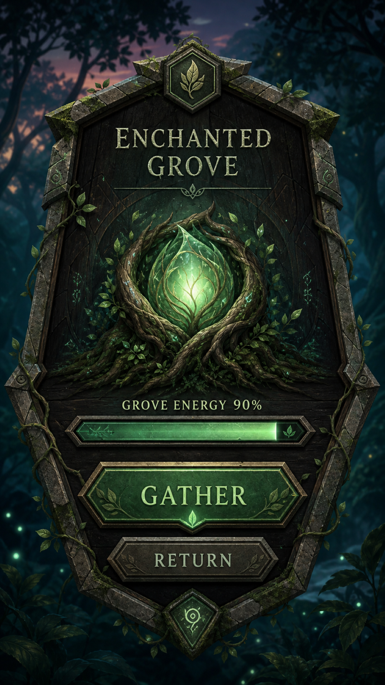

Review-only reference

See the adjacent provenance receipt.
Renderer-derived target phone

Shared-template deterministic implementation.
The generated reference is review-only comparison evidence, never a production source.

See the adjacent provenance receipt.
Shared-template deterministic implementation.